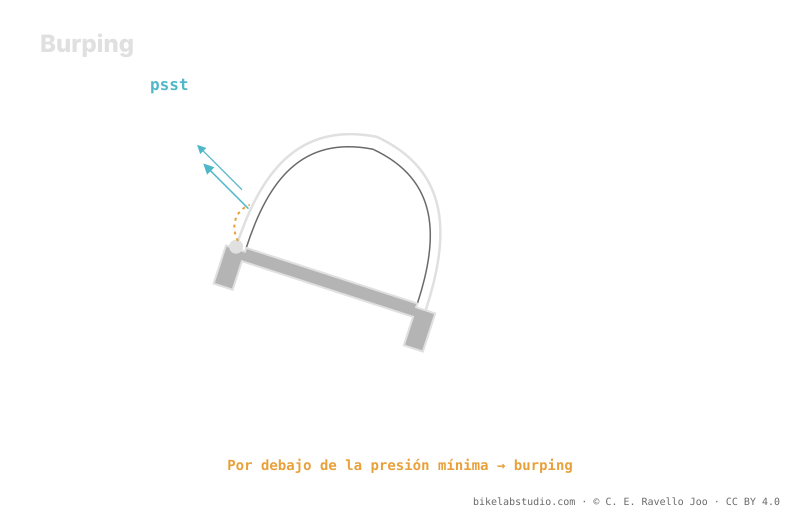

Bajar la presión gana huella y agarre, pero tiene un suelo: el burping. En una curva marcada o un impacto lateral, el talón se despega un instante de la llanta —destalonar— y escapa aire de golpe. Ese suelo no es una cifra universal: sube o baja con el ancho interno de la llanta, la carcasa y los insertos. El hookless topa arriba a 5 bar / 72.5 PSI por norma ETRTO, pero por abajo el límite lo pone el burping. La presión no es un número; tu suelo real lo estima la calculadora.
Todo el mundo habla de bajar la presión para agarrar más. Poca gente explica dónde está el fondo — y el fondo es donde tu rueda se destalona y te tira al suelo.
Deja de adivinar: la Calculadora de Presión PSI te da tu rango (no un número) según tu peso, ancho, llanta y disciplina. ▶ Abrir la calculadora PSI
En tubeless el neumático sella contra la llanta apoyando su talón en el asiento. Cuando cargas fuerte de lado en una curva o recibes un golpe lateral, el flanco se deforma y, si vas con poca presión, ese talón puede despegarse un instante: por la rendija escapa un soplo de aire —el "burp"— y a veces algo de líquido sellante. En español lo llamamos destalonar. El resultado es una pérdida súbita de presión justo cuando más agarre necesitas, y en el peor caso el neumático sale del asiento y pierdes la rueda.

Bajar presión es como acercarte a un borde: cada milímetro de aire que sueltas gana agarre, hasta que das el paso de más y el talón se suelta. El truco está en saber dónde está ese borde para tu sistema.
Menos presión significa más huella, más conformidad al terreno y más agarre — hasta cierto punto. Pasado el suelo, el neumático empieza a doblarse en curva, a golpear la llanta contra las piedras y a destalonar. No es que "más bajo sea mejor sin fin": hay un fondo por debajo del cual pierdes control y arriesgas la llanta y la rueda. Ese fondo es tu presión mínima útil, y no coincide con la del vecino.
Tres cosas deciden cuánto puedes bajar con seguridad:
Ancho interno de la llanta: una llanta más ancha asienta mejor el talón y da más soporte lateral al neumático, así que estabiliza el conjunto y permite bajar con más margen antes del burping.
Carcasa: una carcasa robusta o de flancos rígidos aguanta presiones más bajas sin doblarse; una carcasa ligera se pliega antes y obliga a llevar algo más de aire para protegerla.
Insertos: un inserto sostiene el neumático desde dentro, protege la llanta del golpe y mantiene el talón en su sitio, lo que baja el suelo y te da margen frente al destalonado. Es la vía más clara para rodar más blando con seguridad.
Conviene no confundir los dos límites. El tubeless hookless tiene un techo normado: la ETRTO fija un máximo de 5 bar (72.5 PSI) por seguridad de asiento del talón. Ese es el único número "duro" aquí, y en MTB casi nunca te acercas a él. El límite que de verdad te importa en montaña es el de abajo, y ese no lo pone ninguna norma: lo pone el burping según tu llanta, tu carcasa y tus insertos. Techo por reglamento; suelo por física de tu montaje.
El talón se despega un instante de la llanta en carga lateral o impacto y escapa aire. En español, destalonar. Con poca presión se vuelve probable.
Pasado el suelo aparecen burping, golpes de llanta y el neumático que se dobla. Ese suelo depende de tu sistema, no es universal.
Ancho interno de la llanta, robustez de la carcasa e insertos. Mejor conjunto, más abajo puedes ir con seguridad.
Sí, por arriba: 5 bar / 72.5 PSI por ETRTO. En MTB el problema real es el suelo, que lo marca el burping, no esa cifra.
La Calculadora de Presión PSI estima tu rango real por rueda —incluido su borde inferior— según peso, ancho, llanta y disciplina. ▶ Abrir la calculadora PSI
© 2026 BikeLab Studio. Contenido bajo CC BY 4.0: puedes copiarlo, traducirlo y publicarlo, incluso con fines comerciales. La cita es obligatoria. Sin atribución, la licencia se revoca de forma automática (CC BY 4.0, §6.a) y el uso pasa a ser una infracción de derechos de autor: solicitamos la retirada del contenido y su desindexación. · Diseño y propiedad: Carlos Ravello Joo